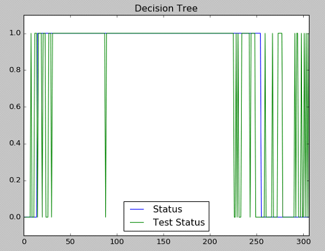

A Beginner's Experience on Data Classification with Scikit-Learn
Last modified on 26/05/2018
TL;DR | Python, Panda and ScikitLearn library are really beginner-friendly and useful for data classification problem. Here I will share my experience in using these tools on a simple project to classify certain time period as 'unstable' based on the country's index price.
This article is intended for beginners who just started exploring machine learning, just like me. I am not an expert in this field so there might be some mistakes in the steps below.
Without further ado, let's start!
Objective
The goal for this project is to use the trained model to classify 'unstable' period based on index price of a country. In this project, I used Indonesia as a case study.Background
To better understand the motivation behind this project, let's look at the context of the problem. Many Asian countries experienced economic crisis in 1990s. It started with financial crisis which developed into fundamental economic crisis. Indonesia was among the most severely affected countries in Southeast Asia. The start of the unstable period in Indonesia was around August 1997. The impact was devastating. As Indonesians' purchasing power collapsed along with the economy, many could not afford their basic needs. Public protests and riots in most major cities in Indonesia resulted in massive destruction and deaths. Political instability perpetuated the dire situation amid Indonesia's inability to recover from the crisis quickly. Below is the chart for Indonesia's index price (IDX) adjusted close price during that period (source: Yahoo Finance). An ideal model would be the one that can predict any impending economic crisis so that various stakeholders (especially policy makers) can implement appropriate measures to prevent or mitigate the impact of such crisis.However, to achieve that level, it requires more extensive and complex research. It needs to identify the root cause, that can involve many aspects of the economy. In this project, the model will classify certain period based solely on the index price.
Preparing the data
Firstly, I obtained the data set to train the model. I downloaded it from Yahoo or Google Finance in CSV format.Next, create a Python file (e.g. test.py) and import some required libraries:
- Pandas to help us process the data
- Numpy to assist in doing operations such as comparison or counting
- Matplotlib to generate a charts/graph used in this article from our data.
- Scikit-Learn (sklearn) and the desired classifiers (Support Vector Machine, Binary Tree and Nearest Centroid Classifier)
from itertools import islice
import pandas as pd
import numpy as np
import matplotlib.pyplot as plt
from sklearn import svm
from sklearn import tree
from sklearn.neighbors.nearest_centroid import NearestCentroid
Now we need to look at the data that we have, which is time series data of IDX price for certain period of time shown below:
You might observe that the graph does not show a very clear pattern or boundary in determining the start of unstable period. Therefore, we need to process this raw data into something that can help us to train the model on.
Several derived parameters that I could think of are as the following:
- Daily change rate
- 10 Days Moving Average of daily change rate
- 10 Days Moving Variance of daily change rate

def window(seq, n=2):
"Returns a sliding window (of width n) over data from the iterable"
" s -> (s0,s1,...s[n-1]), (s1,s2,...,sn), ... "
it = iter(seq)
result = tuple(islice(it, n))
if len(result) == n:
yield result
for elem in it:
result = result[1:] + (elem,)
yield result
def moving_averages(values, size):
for selection in window(values, size):
yield sum(selection) / size
def moving_var_ave(values, size):
for selection in window(values, size):
tenMovAve = sum(selection) / size
#accessing each element from a tuple
result = 0
for i in range (0,10):
result = result + (selection[i] - tenMovAve)**2
yield result / size
#import a series from source file
fullSf = pd.read_csv('IHSG 9799.csv')
dateSf = fullSf['Date']
dateSf = pd.to_datetime(dateSf)
dateDf = dateSf.to_frame()
selectedSf = fullSf['Adj Close']
selectedDf = selectedSf.to_frame()
#Finding daily rise/fall rate
dailyChangeDf = selectedDf.diff()
dailyChangeRateDf = dailyChangeDf.div(other=selectedDf[1:])
dailyChangeRateDf.columns = ["Daily Change Rate"]
matrixDf = dailyChangeRateDf.as_matrix()
tenMovingAveDf = pd.DataFrame({'10 Day Ave':[0,0]})
i = 0
for avg in moving_averages(matrixDf, 10):
tenMovingAveDf.loc[i] = avg
i = i+1
tenVarAveDf = pd.DataFrame({'10 Var Ave':[0,0]})
i = 0
for avg in moving_var_ave(matrixDf, 10):
tenVarAveDf.loc[i] = avg
i = i+1
#join will merge the dataframe based on the index
resultDf = dateDf.join(selectedDf, how='inner')
resultDf = resultDf.join(tenMovingAveDf, how='inner')
resultDf = resultDf.join(dailyChangeRateDf, how='inner')
resultDf = resultDf.join(tenVarAveDf, how='inner')
resultDf = resultDf[1:]
#finally, reverse the order of the result dataframe
resultDf = resultDf.reindex(index=resultDf.index[::-1])
Now let's train our model using these four features/parameters: daily index price, daily change rate, 10 days moving average and 10 days moving variance. But before that, we need to select the training data. The most common practice is to divide your data into approximately the first 60% for training data, the next 20% for test data and the last 20% validation data. As we are dealing with time series data this approach is not suitable as 60% of the beginning of period contain mostly stable period and the last 40% contain unstable period. What we can do is to select the even row for training data and the odd ones for test data (or the other way around) as follows:
#assign status to different time period
statusDf = pd.DataFrame({'Status':[0]})
for j in range(0,31):
statusDf.loc[j] = 0
for j in range(31,511): #17 months unstable period
statusDf.loc[j] = 1
for j in range(511,615):
statusDf.loc[j] = 0
statusDf = statusDf[1:]
#construct training data, select only even row in the resultDf
trainingDataDf = resultDf.iloc[::2]
trainingStatusDf = statusDf.iloc[::2]
#construct test data, select odd row in the resultDf
testDataDf = resultDf.iloc[1::2]
testStatusDf = statusDf.iloc[1::2]
Time to train!
All set to go and we are ready to train our classification model. Here I opt to use Support Vector Machine(SVM), Decision Tree and Nearest Centroid Classifier (NCC). As always, you can use other classifiers that you deem fit. If you feel more adventurous, try using Neural Network :)
#start SVM
X = trainingDataDf[['Daily Change Rate','10 Day Ave','Adj Close','10 Var Ave']].as_matrix()
y = trainingStatusDf['Status']
clf = svm.SVC(kernel='linear')
clf.fit(X,y)
predictionResult = clf.predict(testDataDf[['Daily Change Rate','10 Day Ave','Adj Close','10 Var Ave']].as_matrix())
predictionResultDf = pd.DataFrame({'Test Status':predictionResult})
#compare prediction result with the test status
tempDf = testStatusDf.reset_index()
comparisonDf = tempDf.join(predictionResultDf, how='outer')
# print(comparisonDf)
comparisonDf[['Status','Test Status']].plot(title='Support Vector Machine')
plt.ylim((-0.1,1.1))
correctPredictionArr = np.where((comparisonDf['Status'] == comparisonDf['Test Status']),1,0)
nonZero = np.count_nonzero(correctPredictionArr)
accuracy = nonZero/correctPredictionArr.size*100
print ("Accuracy for SVM = " + str(accuracy))
votingDf = pd.DataFrame({'SVM Prediction':predictionResult})
# #start Decision Tree
X = trainingDataDf[['Daily Change Rate','10 Day Ave','Adj Close','10 Var Ave']].as_matrix()
y = trainingStatusDf['Status']
clf = tree.DecisionTreeClassifier()
clf.fit(X,y)
predictionResult = clf.predict(testDataDf[['Daily Change Rate','10 Day Ave','Adj Close','10 Var Ave']].as_matrix())
predictionResultDf = pd.DataFrame({'Test Status':predictionResult})
#compare prediction result with the test status
tempDf = testStatusDf.reset_index()
comparisonDf = tempDf.join(predictionResultDf, how='outer')
# print(comparisonDf)
comparisonDf[['Status','Test Status']].plot(title='Decision Tree')
plt.ylim((-0.1,1.1))
correctPredictionArr = np.where((comparisonDf['Status'] == comparisonDf['Test Status']),1,0)
nonZero = np.count_nonzero(correctPredictionArr)
accuracy = nonZero/correctPredictionArr.size*100
print ("Accuracy for DT = " + str(accuracy))
tempDf = pd.DataFrame({'DT Prediction':predictionResult})
voting2Df = votingDf.join(tempDf, how='outer')
#start Nearest Centroid Classifier
X = trainingDataDf[['Daily Change Rate','10 Day Ave','Adj Close','10 Var Ave']].as_matrix()
y = trainingStatusDf['Status']
clf = NearestCentroid()
clf.fit(X,y)
predictionResult = clf.predict(testDataDf[['Daily Change Rate','10 Day Ave','Adj Close','10 Var Ave']].as_matrix())
predictionResultDf = pd.DataFrame({'Test Status':predictionResult})
#compare prediction result with the test status
tempDf = testStatusDf.reset_index()
comparisonDf = tempDf.join(predictionResultDf, how='outer')
# print(comparisonDf)
comparisonDf[['Status','Test Status']].plot(title='Nearest Centroid Classifier')
plt.ylim((-0.1,1.1))
# comparisonDf['Status'].plot()
correctPredictionArr = np.where((comparisonDf['Status'] == comparisonDf['Test Status']),1,0)
nonZero = np.count_nonzero(correctPredictionArr)
accuracy = nonZero/correctPredictionArr.size*100
print ("Accuracy for NCC = " + str(accuracy))
tempDf = pd.DataFrame({'NCC Prediction':predictionResult})
voting3Df = voting2Df.join(tempDf, how='outer')
votingResultDf = voting3Df.mode(axis=1)
votingResultDf.columns = ['Voting Result']
votingFinalDf = voting3Df.join(votingResultDf, how='outer')
# print(votingFinalDf)
tempDf = testStatusDf.reset_index()
comparisonDf = tempDf.join(votingFinalDf, how='inner')
comparisonDf[['Status','Voting Result']].plot(title='Voting Result')
plt.ylim((-0.1,1.1))
correctPredictionArr = np.where((comparisonDf['Status'] == comparisonDf['Voting Result']),1,0)
nonZero = np.count_nonzero(correctPredictionArr)
accuracy = nonZero/correctPredictionArr.size*100
print ("Accuracy for voting = " + str(accuracy))
plt.show()
The line that does the training is clf.fit() while prediction is clf.predict(). After running the code, you will be presented with charts similar to below:


The blue line on the charts above indicates the ideal classification (based on our training label) and the green one is the classification made by the model.
Moving Forward
Among these classifiers, NCC seems to fit this problem well. From the result charts above, we can see it has more stable classification even though it predicts the end of stable period too early.There are much more things that we can do to improve the classification further. For example, if you notice on the code snippet above, there is
voting process where it takes the majority of result among these three classifiers. In other words, we do not have to choose one algorithm to fit our problem. In the end, each problem is unique and requires unique approach as well. But that is where the fun is! We get to play around with different parameters and algorithm to continuously improve our model.
Good luck and have fun!